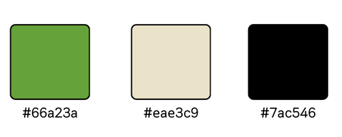

AVANCES
Propuesta de trabajo de EcoLife
El presente trabajo se basa en el desarrollo de un sitio web para EcoLife, una organización dedicada a la promoción de prácticas sustentables y responsables con el medio ambiente. Su actividad principal consiste en organizar una feria sustentable itinerante que recorra distintas ciudades de una provincia argentina, ofreciendo a la comunidad un espacio para aprender, experimentar y consumir de manera consciente.
El sitio web que propone nuestro grupo tiene como objetivo brindar toda la información necesaria sobre la feria —fechas, actividades, ubicación y expositores— y facilitar el acceso a productos y servicios relacionados con la sustentabilidad. Además, busca generar una experiencia digital atractiva y accesible para todo tipo de usuarios, promoviendo valores ecológicos y fomentando la participación en este tipo de iniciativas.
El concepto general del sitio se basa en un diseño limpio, natural e interactivo, alineado con los principios ecológicos de la organización. Las estrategias de atracción incluyen contenido visual impactante, secciones dinámicas, formularios de inscripción y compra, así como recursos educativos para sensibilizar al público sobre la importancia del consumo responsable.
El público objetivo está conformado por:
- Familias (padres con hijos pequeños o adolescentes), que buscan actividades recreativas y educativas.
- Jóvenes, tanto en pareja como en grupos de amigos, interesados en las nuevas tendencias ecológicas, productos sustentables y experiencias alternativas.
- Personas de todas las edades que ya adoptan hábitos responsables con el ambiente o desean comenzar a hacerlo.
Este público se caracteriza por su interés en el cuidado ambiental, el consumo local, el bienestar y el aprendizaje a través de experiencias prácticas. Además, suele informarse por medios digitales, redes sociales y portales web, por lo que la presencia online de la feria resulta fundamental para su alcance.
Identidad visual de EcoLife
Paleta de colores:
Logo: